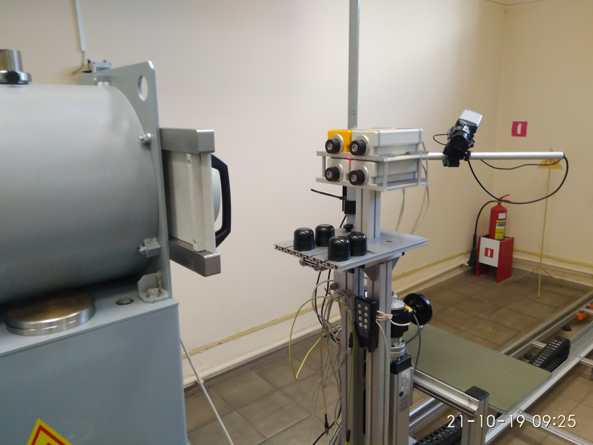

↑
Градуировка ДКР-АТ1103М
- Установить 4 дозиметра на УДГ-АТ110 таким образом, чтобы они расположились параллельно оси излучения. Снять
защитные колпачки
- Расстояние от источника до центра детектора было выставлено по кольцевой риске на колпачке
- Коллиматор без фильтра

- Подключить к ПК
- Запустить ПО 1103М

- Нажать Поиск
- Выбрать БД
- Нажать калибровка
- Выбрать диапазон 20-160 кЭв
- Установить источник Am т.2 мкЗв/ч
- Снять ПСИ в т.7 мк, 30 мк, 70 мк, 97,3 мкЗв/ч
- Выставить показания используя 3U
- Установить источники Cd 1м
- Снять показания в диапазоне 5-25 кЭв и 20-160 кЭв
- Установить Fe 1м
- Установить диапазон 5-25 кЭв
- Для расчета эталона использовать барометр и гигрометр-психометр
- Снять показания
- Установить 57Co 1 мкЗв
- Установить диапазон 20-160
- Надеть на коллиматор фильтр 2 мм
- Выставить расстояние соответствующее точке 0,07 мк
- Измерить фон
- Установить Am
- Снять точки ПСИ 0,07 мк и 0,7 мкЗв